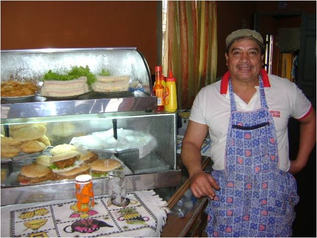

¿Cuáles son los ingredientes y aprendizajes clave de nuestra estrategia de microfranquicias?
By
Aminta Perez-Gold

Quisiera compartir algunas reflexiones después de un año en que el FOMIN decidió apostarle a la microfranquicia como mecanismo para permitir a personas pobres poseer negocios que les generasen ingresos estables y también proveer a personas de bajos ingresos acceso a productos y servicios.
Definitivamente era todo un reto en virtud de las muchas limitantes por ser la microfranquicia un tema emergente, con muy pocas experiencias documentadas, menos evidencias de su impacto en el mediano/largo plazo y muy pocos conocedores del tema. Sin embargo como apasionados por el tema hemos definido una estrategia que a mi juicio, ha generado grandes logros en tan solo un año.
Los ingredientes clave de esta estrategia han sido:
- Asociarse con los pioneros/expertos. Esto nos permitió iniciar con buen pie. Identificar, contactar y aprender de quienes ya tenían experiencia y tiempo trabajando en microfranquicias en África y Asia fue un paso acertado. Para romper el hielo los invitamos a participar en un taller que organizamos y que se caracterizó por la gran apertura a de todos los participantes para compartir su conocimiento y experiencia. Atraer su interés hacia América Latina y el Caribe, fue sin duda un gran logro. De este modo fue como empezamos a trabajar cercanamente con Jason Fairbourne, Fundación Grameen, International Rescue Committee (IRC), y la Universidad de Carolina del Norte.
- Investigar, investigar, investigar, aprender, aprender, aprender. Pienso que fue la mejor manera para conocer bien esta herramienta para el desarrollo y entender el proceso para su desarrollo y expansión. Nos llevó a generar lo que llamamos en el equipo la “línea de base”, pero que realmente es un repositorio con toda la información recabada sobre las microfranquicias, y que incluye desde cómo identificar oportunidades donde aplicarlas y desarrollarlas, pasando por casos de implementaciones, planes de expansión, y terminando con lecciones aprendidas e informes de evaluación existentes.
- Generar interés en la utilización de microfranquicias. Decidimos hacer una campaña de difusión sobre microfranquicias y sus beneficios a nivel del FOMIN y especialmente con nuestros colegas que están basados en toda la región. Organizamos talleres, webinars, artículos en MicAméricas, participamos en el FOROMIC y la Cumbre Global de Microcrédito,la mesa redonda de investigadores e implementadores en la Universidad de Carolina del Norte y otros eventos especializados. Hicimos viajes de promoción a algunos países, apoyándonos en todo momentos en nuestros representantes del FOMIN en cada país. Esto dio como resultado generar una demanda interesante que llevó a que más de 10 instituciones nos hayan presentado ideas de proyectos para desarrollar microfranquicias, un gran logro considerando que es un concepto naciente en nuestra región.
- Aprender haciendo: Uniendo esfuerzos con los proponentes para diseñar proyectos que desarrollen microfranquicias. Esto fue definitivamente toda una experiencia de puesta en práctica de lo aprendido y diseñar proyectos para desarrollar microfranquicias escalables y sostenibles para cada contexto específico.
Los tres proyectos diseñados y aprobados en el 2011 fueron:
Microfranquicias como herramienta para generar oportunidades de negocios para Jóvenes en Riesgo, aprobado en Mayo 2011 y ejecutado por Private Sector Organization of Jamaica (PSOJ) en el marco de su programa Youth Upliftment Through Employment Program. A la fecha ya se ha finalizado el estudio del mercado y se han comenzado a desarrollar microfranquicias para tres tipos de negocios: helados, distribuidor mayorista y hot dogs.
Desarrollo de microfranquicias como opción de negocios para la población de bajos ingresos, presentado por FUNDES México y aprobado en noviembre y el cual implementará microfranquicias desarrolladas para tres tipos distintos de microfranquiciadores: ONG, empresas grandes y PyMEs.
Desarrollo de microfranquicias para microemprendedoras de bajos ingresos, a ser ejecutado por la Fundación Paraguaya para desarrollar microfranquicias para ayudar a las mujeres de su Banca Comunal a generar ingresos adicionales.
Todo esto se logró en solo un año. Y nos quedan cuatro para logar el objetivo de demostrar y posicionar a las microfranquicias como instrumento efectivo para aliviar la pobreza en nuestros países. Ya para el 2012 tenemos una larga lista de actividades por realizar: ver cómo progresa la ejecución de los proyectos aprobados y cómo se encaminan hacia su escalamiento y sostenibilidad; aprobar otros proyectos que desarrollen nuevos modelos (por ejemplo multinacionales usando microfranquicias para colocar sus productos en poblaciones de bajos ingresos); resolver la disyuntiva entre formalidad e informalidad en estos negocios; contribuir a la creación de capacidades y generar oferta de servicios para desarrollo microfranquicias; influenciar audiencias para que se nos unan en el posicionamiento del tema en la región…
Sin embargo en nuestro continuo cuestionamiento nos seguimos preguntado: ¿Podremos lograr la meta de posicionar las microfranquicias en la región en solo 5 años? ¿De qué otros factores dependerá? ¿Cuáles son los riesgos/limitaciones a enfrentar? ¿Cuál debería ser el rol de los gobiernos en su posicionamiento? ¿Qué otra cosas debemos hacer?
Y como nuestra estrategia/plan no está escrita en piedra sus sugerencias y puntos de vista son bienvenidos.